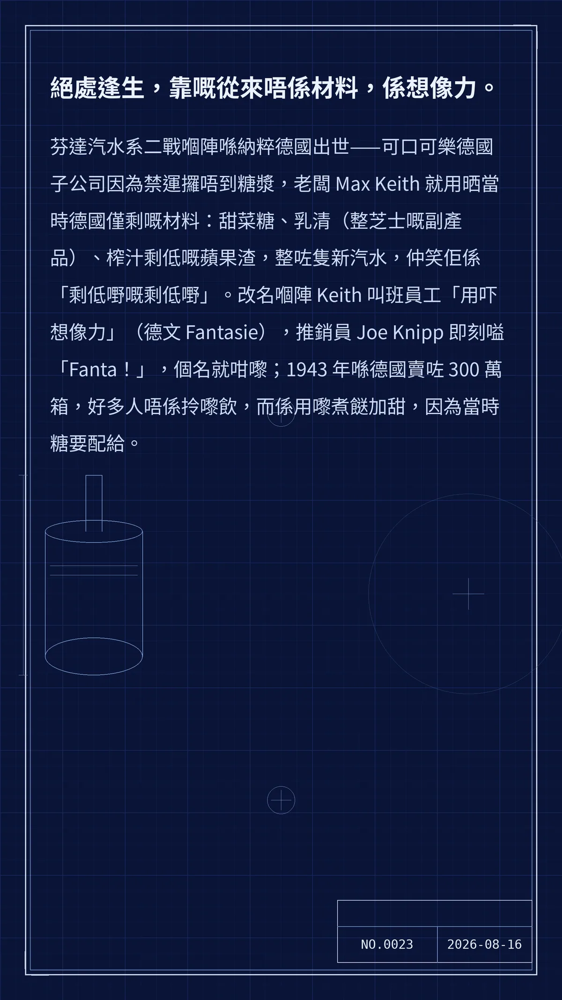

絕處逢生，靠嘅從來唔係材料，係想像力。
芬達汽水系二戰嗰陣喺納粹德國出世——可口可樂德國子公司因為禁運攞唔到糖漿，老闆 Max Keith 就用晒當時德國僅剩嘅材料：甜菜糖、乳清（整芝士嘅副產品）、榨汁剩低嘅蘋果渣，整咗隻新汽水，仲笑佢係「剩低嘢嘅剩低嘢」。改名嗰陣 Keith 叫班員工「用吓想像力」（德文 Fantasie），推銷員 Joe Knipp 即刻嗌「Fanta！」，個名就咁嚟；1943 年喺德國賣咗 300 萬箱，好多人唔係拎嚟飲，而係用嚟煮餸加甜，因為當時糖要配給。
61d0b90e5d9d6934冷知识由执笔的模型自行查证。逐条断言、来源与所引原句存档在纯文字副本里，未经程序逐字校验，留作事后核实。